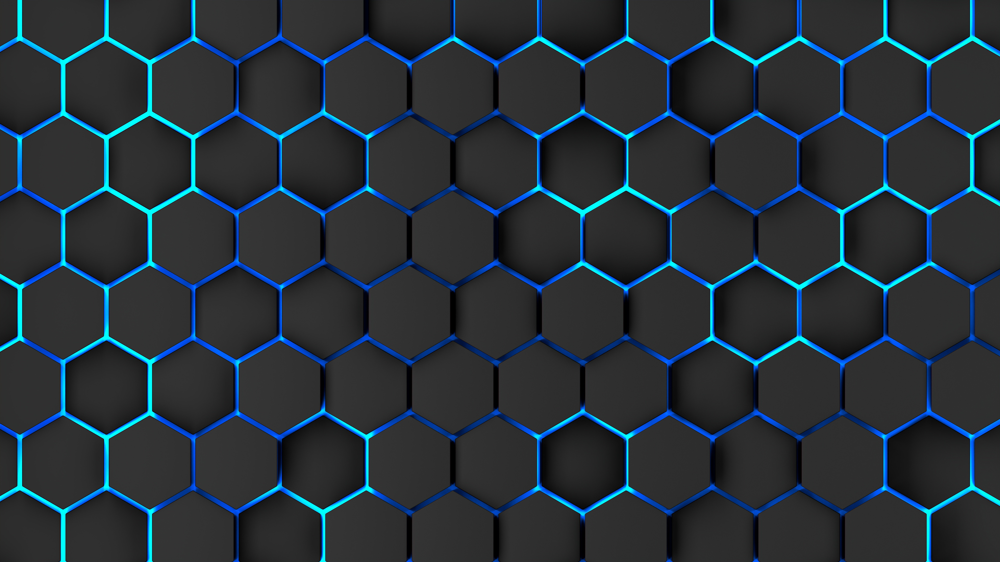

在HTML中，替换元素（replaced
element）是指那些内容不受CSS控制，而是由外部对象或者浏览器自身渲染的元素。¹²³
简单来说，它们的内容不会受到当前文档样式的影响。CSS可以影响替换元素的位置，但不会影响到替换元素自身的内容。
典型的替换元素有：
img，它的内容由src属性指定的图像文件替换。
video，它的内容由src属性或者source子元素指定的视频文件替换。
embed，它的内容由src属性指定的外部资源替换。
iframe，它的内容由src属性指定的另一个文档替换。
object，它的内容由data属性或者param子元素指定的外部资源替换。
applet，它的内容由code属性或者param子元素指定的Java小程序替换。
canvas，它的内容由JavaScript代码绘制的图形替换。
audio，它的内容由src属性或者source子元素指定的音频文件替换。
option，它的内容由value属性指定的文本替换。
input type="image"，它的内容由src属性指定的图像文件替换。
object-fit属性是CSS中的一个属性，它用来指定一个替换元素（比如img或者video）的内容如何适应其容器的大小。
fill，这是默认值。内容会被拉伸或者压缩来填充容器的大小，不保持原有的宽高比。
contain，内容会保持原有的宽高比，同时缩放到适合容器的大小。如果容器的宽高比和内容的不一致，内容会在容器中居中显示，并留有空白。
cover，内容会保持原有的宽高比，同时缩放到填满容器的大小。如果容器的宽高比和内容的不一致，内容会被裁剪以适应容器。
none，内容不会被缩放，保持原有的大小。
scale-down，内容会被缩放到none或者contain中较小的那个尺寸。
